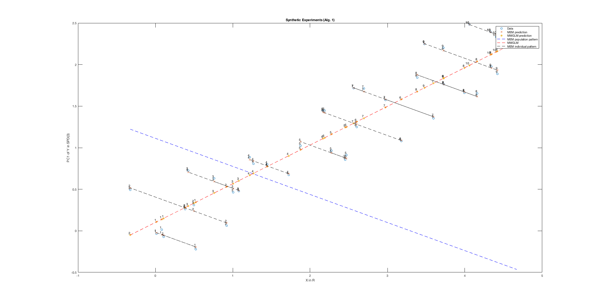
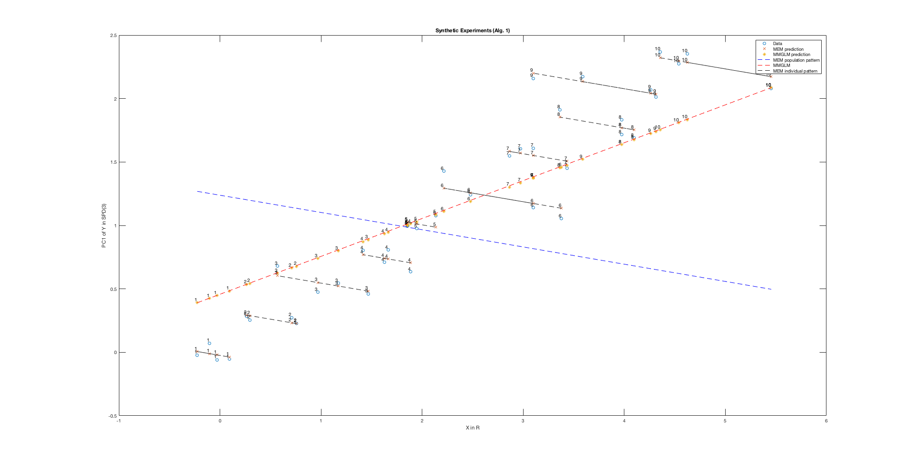
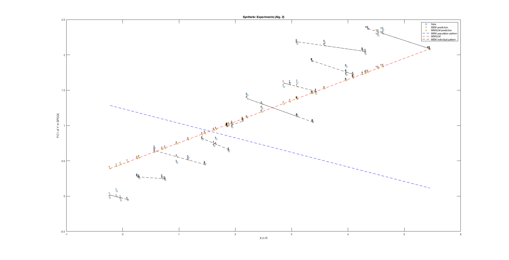

DEMO for "Riemannian Nonlinear Mixed Effects Models: Analyzing LongitudinalDeformations in Neuroimaging"
Hyunwoo J. Kim, Nagesh Adluru, Heemanshu Suri, Baba C. Vemuri, Sterling C. Johnson, Vikas Singh, Riemannian Nonlinear Mixed Effects Models: Analyzing LongitudinalDeformations in Neuroimaging, In Computer Vision and Pattern Recognition (CVPR), July, 2017
Project page: http://pages.cs.wisc.edu/~hwkim/projects/riem-mem/
Github repository: http://github.com/MLman/riem-mem-cvpr2017/
Github page: http://mlman.github.io/riem-mem-cvpr2017/
Contents
Algorithm 1 : subject-specfic intercepts
Comparison between a MMGLM and Riemannian Mixed Effects model with subject-specific intercetps.
addpath(genpath('.')); clear close %synth_exp3 load ./synthdata/synth_exp3_20161029_124937.mat option=struct('centerX',true); [Yhat, Bhat, P] = mmem(X,Y,Z,option); X0 = [ones(size(X,1),1), X]'; [P0, Bhat0, E0, Yhat0] = mglm_logeuc_spd(X',Y); % Visualization of Yhat mytitle='Synthetic Experiments (Alg. 1)'; fname = sprintf('./figs/%s_%s_%s.png',mfilename, mytitle, datestr(now,'yyyymmdd_HHMMSS')); synth_plot_wrapper(X,Z,Y,uV,Pstar,P,Bhat,Yhat,P0,Bhat0,Yhat0,fname,mytitle);
Algorithm 2 : subject-specfic slopes and intercepts
Comparison between a MMGLM and Riemannian Mixed Effects model with subject-specific accelerations and intercetps.
clear close %synth_exp4_for_DEMO_mmem2 load ./synthdata/synth_exp4_for_DEMO_mmem2_20170704_153512.mat option=struct('centerX',true); option.niter= 100; stacks = size(Y,3); Ydims = size(Y,1); [Yhat, model] = mmem2(X, Y, Z, option); U = main_change_direction(X,Y,Z, option); UatB = paralleltranslateAtoB_spd(eye(Ydims),model.B, U); [Yhat1, Bhat1, P1] = mmem(X,Y,Z,option); X0 = [ones(size(X,1),1), X]'; [P0, Bhat0, E0, Yhat0] = mglm_logeuc_spd(X',Y); % Visualization Alg. 1 mytitle='Synthetic Experiments (Alg. 1)'; fname = sprintf('./figs/%s_%s_%s.png',mfilename, mytitle, datestr(now,'yyyymmdd_HHMMSS')); synth_plot_wrapper(X,Z,Y,uV,Pstar,P1,Bhat1,Yhat1,P0,Bhat0,Yhat0,fname,mytitle); % Visualization of Alg. 2 mytitle='Synthetic Experiments (Alg. 2)'; fname = sprintf('./figs/%s_%s_%s.png',mfilename, mytitle, datestr(now,'yyyymmdd_HHMMSS')); synth_plot_wrapper(X,Z,Y,uV,Pstar,model.B,model.V,Yhat,P0,Bhat0,Yhat0,fname,mytitle); 